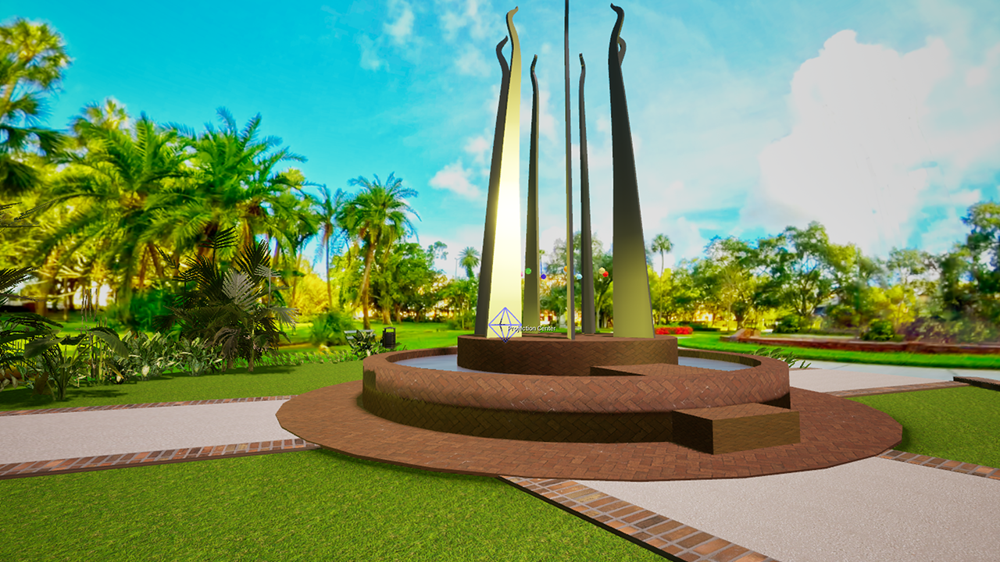

Sticks of Fire: Mythmaking Machine Written, designed, and produced by Stephanie Tripp Music by Thomas Cohen and Stephanie Tripp Created in Unreal Engine 5.4.4 ©2026 Stephanie Tripp Creative Commons license BY-NC-SA 4.0
Borofsky, Jonathan (1997) Lightning Painted Steel sculpture Plant Park, downtown Tampa
Carino, Valerie Q. "Artist Hopes Sculpture Will Strike Your Fancy" Tampa Bay Times Aug. 6, 1997 TampaBay.com website
d'Ans, André-Marcel (1980) "The Legend of Gasparilla: Myth and History on Florida’s West Coast" Tampa Bay History 2.1
Epstein, Jennifer (2024) "'Sticks of Fire' Fan Group Pulling for Lightning Through Playoff Push" WTVT Fox 13 News website
Escalante de Fontaneda, Hernando (1575) "Memoir of the Things, the Shore, and the Indians of Florida" Trans. Buckingham Smith (1854) Early Visions of Florida website Ed. Alisa Roberts, University of South Florida
Hesiod Theogony Trans. Hugh Evelyn-White (1914) Harvard University Press
Kite-Powell, Rodney (2013) "Charting the Land of Flowers:Exploration and Mapmaking in Spanish Florida" Social Education 77.1
Kite-Powell, Rodney (2011) "Tampa Bay: Body of Water or Regional Identity?" Tampa Tribune
Manship, Paul (1934) Prometheus Gilded cast bronze sculpture Rockefeller Center, New York City
Shaffer, O.V. (1984) Sticks of Fire Stainless steel sculpture Plant Park, Tampa, Florida
"Theodor De Bry's Engravings of the Timucua" Florida Memory website State Library and Archives of Florida
Screenshot of "Sticks of Fire" story WTVT Fox 13 News website
Inset of Universalis Cosmographia (1507) Martin Waldseemuller Wikimedia Commons
Lemoyne/De Bry Engravings Florida Center for Instructional Technology University of South Florida FCIT website
Map of Tampa Bay area (1757) Francisco Maria Celi Wikimedia Commons
Screenshot of "Sticks of Fire" fan page Facebook group page
Photo of contemporary Gasparilla parade Christopher Hollis Wikimedia Commons
Photo of Gasparilla parade, downtown Tampa (1922) Burgert Brothers Digital Commons online historical archive University of South Florida
Photo of Lightning forward Stephen Stamkos Michael Miller CC BY-SA 3.0
Photo of fans during the Stanley Cup Final Michel Curi CC BY 2.0
Screenshots of videos showing satellite images and lightning activity during Hurricane Milton WTSP ABC Action News website
Screenshots of "Sticks of Fire" sub/Reddit posts Main post and photo by keyboarddevil Comments by fireshaper and fishmong3r Reddit website
360-degree image of Plant Park used for the project skydome by Stephanie Tripp
Musical performance and creative consultation on dynamically generated musical composition by Thomas Cohen
3-D meshes of Sticks of Fire sculpture, Plant Hotel minaret, and Plant Park architecture created in Blender by Stephanie Tripp
Plant Park flora and assorted small props and natural textures by Quixel Megascans Standard Fab license - CC BY
Park bench and waste basket by NatureManufacture Standard Fab license - CC BY
Lamp post by Typical Tris Standard Fab license - CC BY
Scrolls and framed world map by Dragon Motion Standard Fab license - CC BY
Wood and grass hut by Hypercube Standard Fab license - CC BY
Giant lock by Serlo Standard Fab license - CC BY
Animated lightning effects in Android build IZ.mdVerz Standard Fab license - CC BY
Chest, goblet, sword, and chandelier Howard Coates Standard Fab license - CC BY
Scanned model of Emil Hundrieser's sandstone Prometheus fountain in Berlin by visualmotions Standard Fab license - CC BY Retopologized in Blender by Stephanie Tripp
Pirate ship model by Impylse Standard Fab license - CC BY
Beads,trash bag, plastic jugs by Dekogon Studios Standard Fab license - CC BY
Model of Meta Quest headset by Alvin Suen Standard Fab license - CC BY